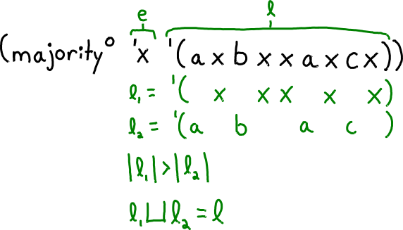
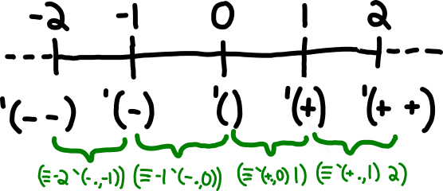

The Majority Relation
Consider the list '(a b a c a). Here, 'a is the majority element. Now consider the list '(x x y z). Although x is the most frequent element, it is not the majority. Notice that a list can have zero or one majority elements.
Let’s define a relation (majorityo e l) in miniKanren.
A value e
A list l
Most of the elements in l are equal to e
(majorityo 'x '(a x b x a x x c x))
I always like to start by drawing a picture and adding annotations.

l is a disjoint union, or riffle, of two lists l₁ and l₂.
l₁ is longer than l₂.
l₁ is e, repeated.
Here is my first attempt: majorityo-naive.
(defrel (majorityo-naive e l) (fresh (l₁ l₂ l₁⊔l₂) (== l l₁⊔l₂) (==* e l₁) (longero l₁ l₂) (riffleo l₁ l₂ l₁⊔l₂)))
Corresponding helper relations:
(defrel (==* e l) (conde ((== l '())) ((fresh (d) (== l `(,e . ,d)) (==* e d))))) (defrel (longero l₁ l₂) (fresh (a₁ d₁ a₂ d₂) (== l₁ `(,a₁ . ,d₁)) (conde ((== l₂ '())) ((== l₂ `(,a₂ . ,d₂)) (longero d₁ d₂))))) (defrel (riffleo l₁ l₂ l₁⊔l₂) (fresh (a₁ d₁ a₂ d₂ d₁⊔l₂ l₁⊔d₂) (conde ((== l₁ '()) (== l₂ '()) (== l₁⊔l₂ '())) ((== l₁ `(,a₁ . ,d₁)) (== l₂ '()) (== l₁⊔l₂ l₁)) ((== l₁ '()) (== l₂ `(,a₂ . ,d₂)) (== l₁⊔l₂ l₂)) ((== l₁ `(,a₁ . ,d₁)) (== l₂ `(,a₂ . ,d₂)) (fresh (α₁ α₂ α₃) (conde ((== l₁⊔l₂ `(,a₁ . ,d₁⊔l₂)) (== `(,α₁ ,α₂ ,α₃) `(,d₁ ,l₂ ,d₁⊔l₂))) ((== l₁⊔l₂ `(,a₂ . ,l₁⊔d₂)) (== `(,α₁ ,α₂ ,α₃) `(,l₁ ,d₂ ,l₁⊔d₂)))) (riffleo α₁ α₂ α₃))))))
==* and longero both recur on l₁ in the definition of majorityo-naive. Below is a relation expressing their conjunction.
This technique also leads to the singly-recursive relation (==*-and-riffleo e l₁ l₂). I was not able to do the same for longero and riffleo.
(defrel (==*-and-longero e l₁ l₂) (fresh (d₁) (== l₁ `(,e . ,d₁)) (conde ((== l₂ '())) ((== l₂ `(,a₂ . ,d₂)) (==*-and-longero e d₁ d₂)))))
Also, the fresh variable l₁⊔l₂, in majorityo-naive equals l. Instead, I can use l everywhere.
The below implementation, majorityo-cpt, applies these findings. The suffix cpt indicates that it is a correctness-preserving transformation of majorityo-naive.
(defrel (majorityo-cpt e l) (fresh (l₁ l₂) (==*-and-longero e l₁ l₂) (riffleo l₁ l₂ l)))
1 A different approach
I thought about how to express write this as a Racket predicate, majority?. I would use a helper function margin.
(define (majority? x l) (positive? (margin x l))) (define (margin x l) (cond ((null? l) 0) ((equal? (car l) x) (+ 1 (margin x (cdr l)))) (else (- 1 (margin x (cdr l))))))
Turning these functions into relations is difficult, because they involve numbers. Relations that involve numbers have the potential to run forever. There is always a higher number to consider.
Moreover, margin returns negative numbers, e.g. (margin 'a '(b b b)) evaluates to -3. So I can’t make use of the arithmetic system from ’The Reasoned Schemer, Second Edition’ because its relations only work on natural numbers, not integers.
positiveo
=0o
+1o
-1o
Then the code for majoritys would be as follows.
(defrel (majorityo x l) (fresh (n) (positiveo n) (deficito x l n))) (defrel (margino x l n) (conde ((== l '()) (=0o n)) ((fresh (a d m) (== l `(,a . ,d)) (conde ((== x a) (+1o m n)) ((-1o m n))) (margino x d m)))))
But miniKanren is bidirectional, so (-1o m n) can be expressed as (+1o n m) instead.
(defrel (margino x l n) (conde ((== l '()) (=0o n)) ((fresh (a d m) (== l `(,a . ,d)) (conde ((== x a) (+1o m n)) ((+1o n m))) (margino x d m)))))
Since this only needs to support +1o, =0o, and positiveo, I’m thinking about Peano numbers. But I need to somehow incorporate negative and positive numbers. Here is a proposed encoding, which I will call list integers, drawn on the number line. I annotated some interesting relationships in green.

When dealing with list-integers, zero is '(), positive numbers are nonempty lists of `+s, and negative numbers are nonempty lists of '-s. From this encoding, the definitions of =0o, positiveo, and +1o are:
(defrel (=0o x) (== x '())) (defrel (positiveo x) (fresh (y) (== x `(+ . ,y)))) (defrel (+1o x x+1) (conde ((== x `(- . ,x+1))) ((== `(+ . ,x) x+1))))
These relations are golden! They never diverge, because they leave parts of their arguments fresh. But that means things like (positiveo '(+ -)) succeed, even though '(+ -) is not a valid list integer. Thankfully, I don’t have to worry about these false positives, because majorityo and margino never construct invalid list integers.